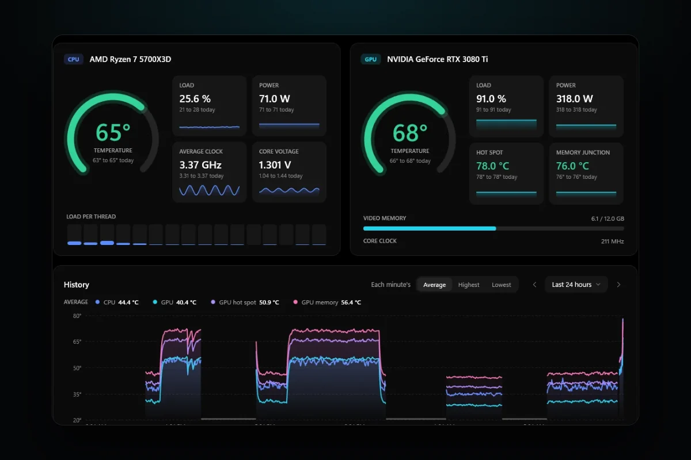
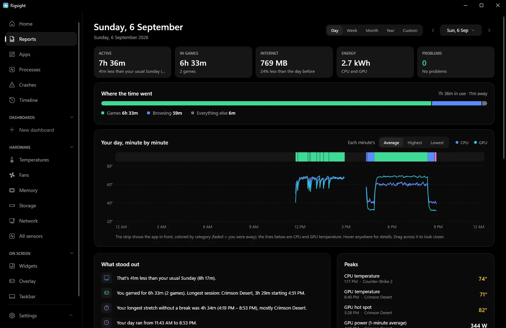

PC problems · Temperatures
How to check GPU temperature history without being misled
RigSight's own chart once showed a GPU topping out at 68° on a day that hit 74°. How to check GPU temperature history on Windows with HWiNFO, GPU-Z or Afterburner logs, or a temperature monitor with history, and how to read it.

The short answer
Windows keeps no temperature history. Task Manager shows only the GPU temperature right now. To check GPU temperature history, record it with a sensor app. HWiNFO, GPU-Z and MSI Afterburner can each log readings to a file while you play. For a history of every day without starting a log, use a monitor that records in the background.
In the first week of October, RigSight's own temperature chart showed a GPU topping out at 68° on a day whose highest reading was 74°. Both numbers were right, and the chart still told the wrong story. If you want to check GPU temperature history in Windows, that's the trap to know about. First you need a history at all, because Windows doesn't keep one. Then you need to read it in a way that doesn't hide the moment the card got hot.
How RigSight caught it
The line on the chart showed each minute's average. Inside one of those minutes the GPU had touched 74° for a few seconds, and an average of sixty seconds smoothed that away. The day's high said 74°, and the line never got there. That's confusing when you're looking for the moment it got hot.
So since version 0.18.0, the Temperatures chart has a switch for each minute's Average, Highest or Lowest. Pointing at a minute shows all three. The average stays the default because it shows the trend, and the highest is one click away when you're hunting a spike.
The same week, someone on X pointed out a second problem. A stretch where RigSight recorded nothing looked exactly like a PC that had stayed cool. Now any stretch with nothing recorded is shaded and labelled "Not recorded". Pointing at it gives the times and, when Windows' own log says, the reason, such as the PC being off or asleep. The whole story, with a third way the chart misled people, is in Three ways my temperature chart was lying.
Today RigSight records CPU, GPU, GPU hot spot and GPU memory temperatures all day, with no log to start, and the Temperatures page shows them. Its range menu goes from the last 5 minutes to the last 12 months, plus a custom range. Week, Month and Year are the last 7 days, 30 days and 12 months. Drag across any stretch to zoom in. The same page shows the warmest hours of the past week and the CPU's and GPU's resting temperature over the last 30 days. Motherboard and drive temperatures show live on the page but aren't kept. CPU temperature, motherboard and drive readings need RigSight to run with admin rights. RigSight keeps the history as long as you choose, and it's free and open source.

Reports covers any day, week, month, year or custom range. For a single day, its minute by minute graph lines temperatures up with the app in front. For any period, Peaks lists the highest CPU, GPU and GPU hot spot readings with the app that was running. If you want the raw numbers, the Export button on the page saves what it shows, and the Export in Settings can save temperatures as CSV files for a spreadsheet.
Why Windows keeps no temperature history
Windows records crashes, updates and errors in its logs, but not temperatures. Task Manager can show the temperature of a dedicated graphics card, and that's the only temperature Windows itself shows. It has no CPU temperature reading at all, and it saves neither.
That means you can only look back at times when some app was already recording. If nothing was running last night, last night's temperatures are gone. The useful habit is to set up recording before you need it.
How to check GPU temperature history yourself
Check GPU temps right now in Task Manager
Task Manager gives a quick look at the current reading in Windows 10 version 2004 or later, and in Windows 11.
- Press Ctrl + Shift + Esc to open Task Manager.
- Open the Performance tab.
- Click your graphics card, usually GPU 0 or GPU 1.
- Read GPU Temperature under the graphs.
Integrated graphics built into the CPU don't show a temperature here. The graphs on this tab cover only the last minute, and they aren't temperature graphs.
Log it with HWiNFO
HWiNFO is a free sensor app that reads nearly every chip in a PC, CPU included, and can write the readings to a CSV file you open in a spreadsheet.
- Download HWiNFO from its official site and run it.
- Tick Sensors-only and click Start.
- At the bottom of the sensors window, click the logging button, the icon with a green plus.
- Pick a folder and a file name for the CSV log.
- Play as you normally would.
- Click the same button, now a red cross, to stop.
Open the CSV in Excel or Google Sheets and find the column for GPU Temperature, or the CPU column for your chip. Sort it or make a quick line chart. You can lower HWiNFO's polling interval for finer detail, but the default is fine for temperatures. The catch is that it only records while HWiNFO is open and logging. You have to remember to start it, and a log left running for days grows into a very large file.
Other GPU temperature loggers
- GPU-Z has a Log to file box on its Sensors tab. It records the graphics card only.
- MSI Afterburner draws a monitoring graph of the last few minutes, and its Settings > Monitoring tab has a Log history to file box that saves it. With RivaTuner Statistics Server it can also show the temperature on screen while you play.
All of them have the same limit as HWiNFO. They only know about the time they were running and logging. For a temperature monitor with history that records whether you remembered or not, you need one that runs in the background, like RigSight. There's more on how these tools compare in free PC monitoring software.
Check GPU temps while you play
Tabbing out to Task Manager mid game changes what you're measuring, because the card relaxes as soon as the game is in the background. An overlay shows the reading while the game keeps running. The NVIDIA app and AMD Software each have a performance overlay that can include GPU temperature. MSI Afterburner can show it too, drawn in the game by RivaTuner Statistics Server, which installs alongside it. An overlay is good for watching, but it's still only now. Glance at it once the game has run for 10 minutes, then let a log or a background recorder keep the rest.
What to look for in a temperature history
A pile of numbers is only useful if you know what to ask of it.
- Look at the highest reading in a session and when it happened, not only the average line. Compare it with your card's maximum. NVIDIA lists 85 to 93°C for its recent GeForce cards depending on the model, for example 90°C for the RTX 4070 family.
- Check for gaps. A stretch with no readings isn't a cool stretch, so make sure your tool shows where it wasn't recording.
- Watch where the temperature levels off. A short spike to the high 80s is less worrying than an hour spent there.
- Compare the same game over weeks. If one game settles 6 or 8 degrees hotter than it did last month, at the same settings, dust or paste may be building up.
- Note the temperature at rest. A PC idling warmer than it used to, with the room the same, points the same way.
For what counts as normal, see normal GPU temperature while gaming and normal CPU temperature while gaming. If the history shows a real problem, PC overheating while gaming has the fixes.
Whichever tool you pick, start recording today. The next time a game stutters or the PC shuts off, you'll have the hour before it to look at instead of a blank.
Questions people ask
Does Windows keep a history of GPU or CPU temperature?
No. Task Manager shows the graphics card's temperature at this moment, and Windows has no CPU temperature reading of its own. Neither is saved. To look back, you need an app that was recording at the time.
How do I check my CPU temperature history?
Use a sensor app that logs to a file, such as HWiNFO, and start the log before you play. Open the file afterwards in a spreadsheet and look at the highest values. Apps that record all day, like RigSight, keep it without you starting anything, though CPU temperature needs admin rights.
How do I check my GPU temps while gaming?
Task Manager's Performance tab shows the GPU temperature, but you have to tab out of the game. An on-screen overlay from MSI Afterburner with RivaTuner Statistics Server, or your graphics driver's own overlay, shows it during play. A log shows how hot it got afterwards.
When should I worry about GPU temp?
Worry when the card sits at its maker's listed maximum, which is 85 to 93°C on recent NVIDIA cards depending on the model, when the frame rate drops as it gets there, or when the same game runs clearly hotter than it did a few weeks ago. A history is what shows you that last one.